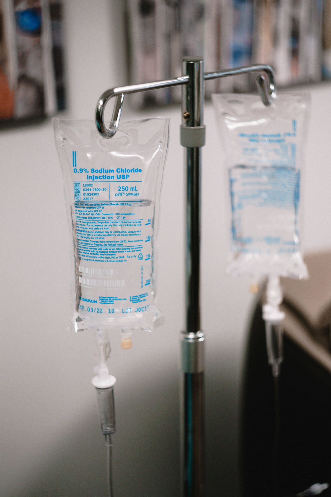
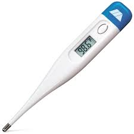

An IV is used for giving the body nutrients and fluids through a tube that is inserted through a vein
This is useful in managing pain, rehydrating, and delivering nutrients

Thermometers
A thermometer stick will measure the internal temperature of your body
This will help with diagnosing potential illnesses because it can detect fevers

Medicines
We offer a variety of drugs to help counteract illnesses, pain, and other symtomps
in immediate need of fixing
We are also working with the Michigan Neurobionics Lab on creating prosthetic legs for patients with increased mobility and comfort to ensure our consumers receive the highest quality of products
They will look like: Prosthetic Limbs.
Within the next year, we will further our product mix. New upcoming equipment we plan to sell can be found in this document:
Future Equipment